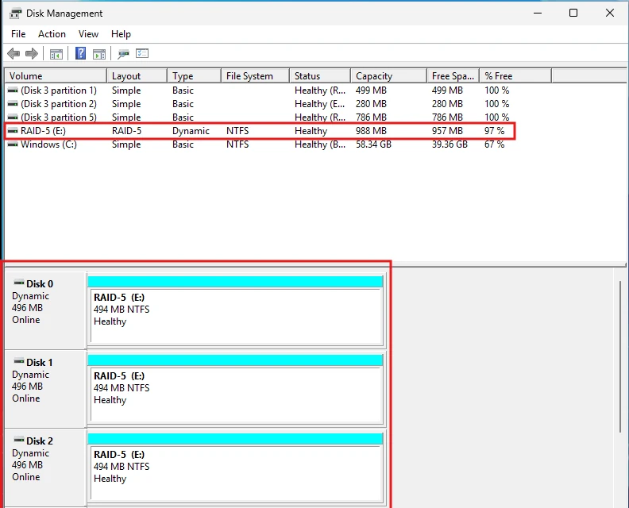
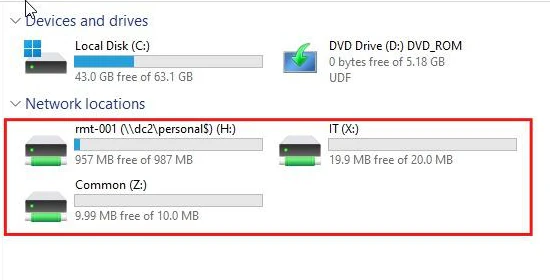
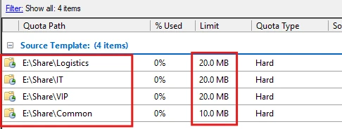
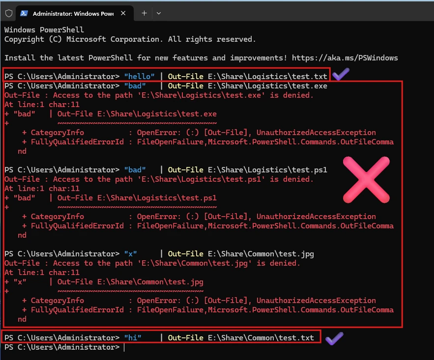
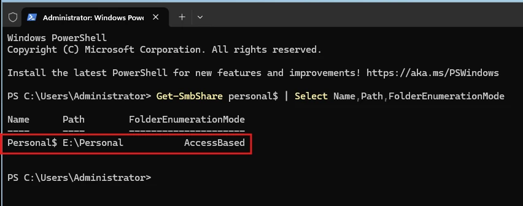
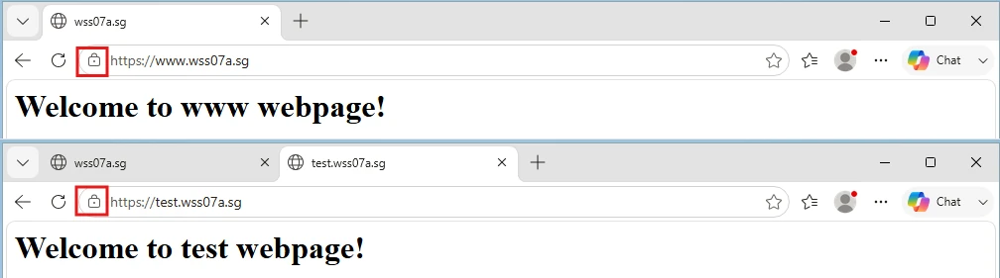
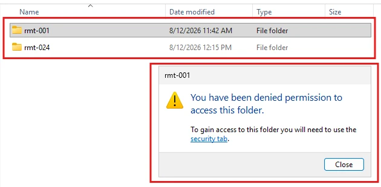
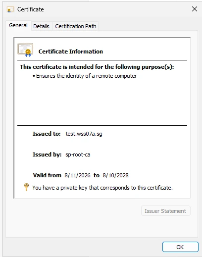
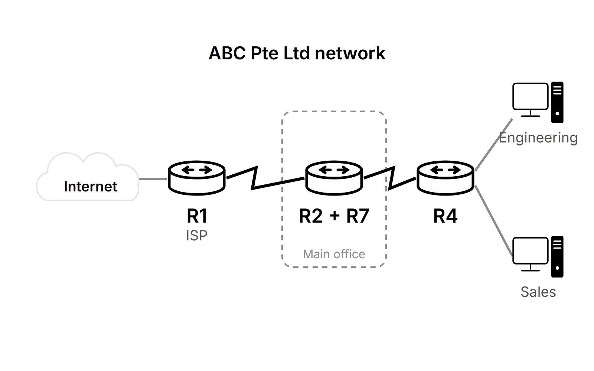

A website that went round in circles
Sending visitors from the insecure address (http) to the secure one (https) also redirected the secure address, so the page never loaded.
Fix I made a tiny separate site whose only job is the redirect.
School project
ET0015 Server Management · Mini project
A complete office computer network, built from virtual machines by four students. I built the server that stores everyone's files and runs the company websites.
For a school module, four of us set up the computer systems for a pretend office, the way an IT team would for a real company: staff accounts, shared folders, websites and secure access from home. Everything ran as virtual machines (computers simulated in software) on our laptops.
My job was DC2, the server that stores everyone's files and runs the company websites. Staff belong to three teams (Manager, Sales and Remote), and what each person can open or save depends on their team.
I combined three disks into one drive, with the files spread across all three. If any one disk breaks, nothing is lost. Every shared folder lives on this drive.

Each team has its own shared folder that other teams can't open: VIP for Managers, Logistics for Sales and IT for the Remote team. There's also Common, which everyone shares.
When staff log in, their folders appear as drives automatically. They don't have to set anything up.

| Folder | Who it's for | Shows up as | Who can open it | Who can save to it | What can be saved | Size limit |
|---|---|---|---|---|---|---|
| Common | Everyone | Z: drive | Everyone | Managers only | Only text files and web pages | 10 MB |
| VIP | Managers | X: drive | Managers | Managers | Anything except programs and scripts | 20 MB |
| Logistics | Sales team | X: drive | Sales team | Sales team | Anything except programs and scripts | 20 MB |
| IT | Remote team | X: drive | Remote team | Remote team | Anything except programs and scripts | 20 MB |
| Personal | Each person | H: drive | Only its owner | Only its owner | Anything | None |
The IT administrator has full control of every folder. "Programs and scripts" means .exe, .bat and .ps1 files.
Each team folder can hold up to 20 MB, and the shared folder 10 MB. Once a folder is full, nothing more can be saved, so one team can't fill up the whole server.

Programs and scripts can carry viruses, so the team folders block them. Common only takes text files and web pages (see the table above).
To check the rules, I tried saving different kinds of files into two folders: Logistics (the Sales team's folder) and Common (everyone's folder).

A script I wrote creates each person's private folder the first time they log in. The folders are hidden from everyone else, so people only ever see their own.

I set up two company websites. Both open with the padlock in the address bar and no security warning, because they use certificates from our own certificate authority.

I set up Work Folders for the Remote team. It keeps a copy of each person's work files on both their laptop and the server, and syncs changes automatically, a bit like a company-run OneDrive.
All four tests passed. Each person's files stay private: even the IT administrator can't open them.

At first, browsers showed a security warning. Each website's certificate (its digital ID card) was missing a detail that browsers check.
Fix I requested new certificates with that detail included. Now browsers trust them.

Sending visitors from the insecure address (http) to the secure one (https) also redirected the secure address, so the page never loaded.
Fix I made a tiny separate site whose only job is the redirect.
The file sync and the websites both needed the same network "door" (port 443, used for secure web traffic).
Fix I set them up so the server can tell which service each visitor wants, and both work side by side.
